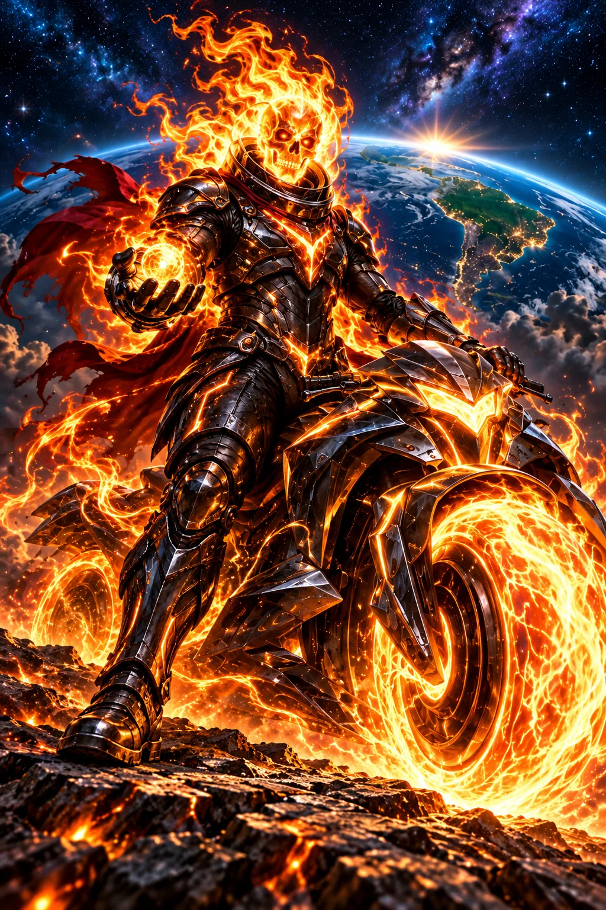

PODER 01
Fogo que acolhe
Acende uma chama cósmica que oferece calor e iluminação sem queimar pessoas, animais ou plantas.

ARQUIVO DOS CAVALEIROS · 03 / 05
Coragem é estar presente quando alguém precisa.
Solidariedade
Personagem e poderes ficcionais do universo PLANO D. Fé, neurodiversidade e cuidado socioambiental inspiram sua jornada.
ORIGEM E TRANSFORMAÇÃO
Brasa trabalhava nas fornalhas de uma estação onde o calor era vendido a quem pudesse pagar. Quando um apagão deixou famílias e animais no frio, reuniu as brasas restantes e descobriu que ainda faltava uma coisa: saber quem precisava de quê. Em vez de distribuir tudo segundo sua própria vontade, ouviu os moradores. Pediu a Deus coragem para servir sem comandar a vida alheia. Sua chama laranja passou a aquecer sem ferir. Com vizinhos neurodivergentes, organizou pedidos claros e maneiras diferentes de participar. Agora enfrenta a Cobiça abrindo abrigos, partilhando recursos e cuidando para que a ajuda não se torne outra forma de controle.
Na ficção, a força de Brasa ganha forma nestas três habilidades. Cada poder expressa um compromisso de cuidado.
PODER 01
Acende uma chama cósmica que oferece calor e iluminação sem queimar pessoas, animais ou plantas.
PODER 02
Forma um refúgio de luz laranja onde cada visitante escolhe distância, luminosidade e espaço para descansar.
PODER 03
Transforma os cofres vazios deixados pela Cobiça em pequenas estrelas que alimentam os abrigos da equipe.
NO UNIVERSO DA HISTÓRIA
Transformar a energia da revolta em presença cuidadosa, buscar em Deus firmeza para repartir recursos e apoiar pessoas neurodivergentes com respeito à autonomia, enquanto protege animais, água e moradia, sem impor escolhas ou transformar a necessidade alheia em espetáculo público.
UM PASSO POSSÍVEL HOJE
Pergunte a alguém próximo qual ajuda seria útil, sem presumir necessidades. Combine limites, preserve a privacidade e consulte os canais institucionais antes de oferecer tempo, materiais ou qualquer contribuição financeira.
Explore a atuação, os canais oficiais de apoio e a transparência no diretório do PLANO D. A história é uma inspiração; estas instituições reais atuam de forma independente do universo ficcional.
CINCO CAMINHOS · UM PROPÓSITO
Narrativa autoral preparada com assistência de IA por solicitação do idealizador. Os cavaleiros são alegorias dos valores do PLANO D. Direitos e créditos ↗